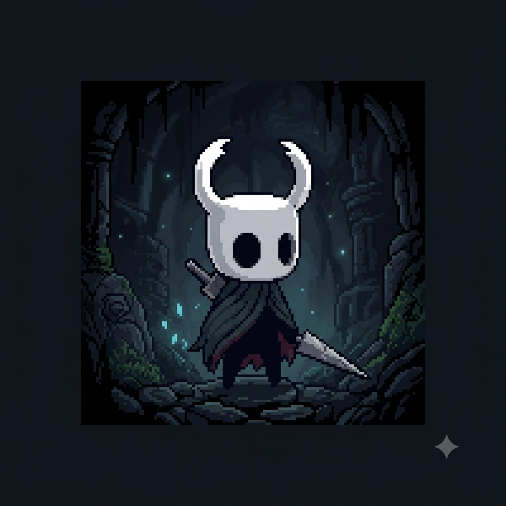
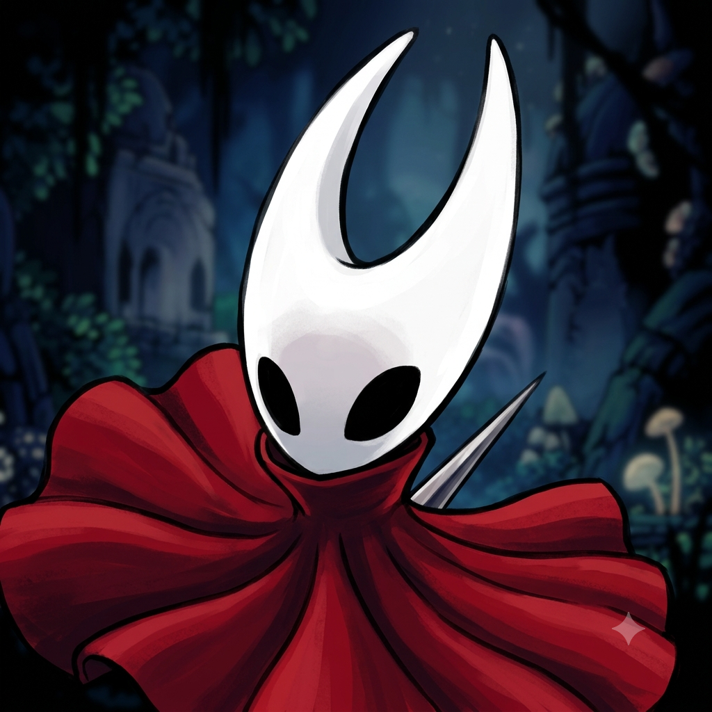
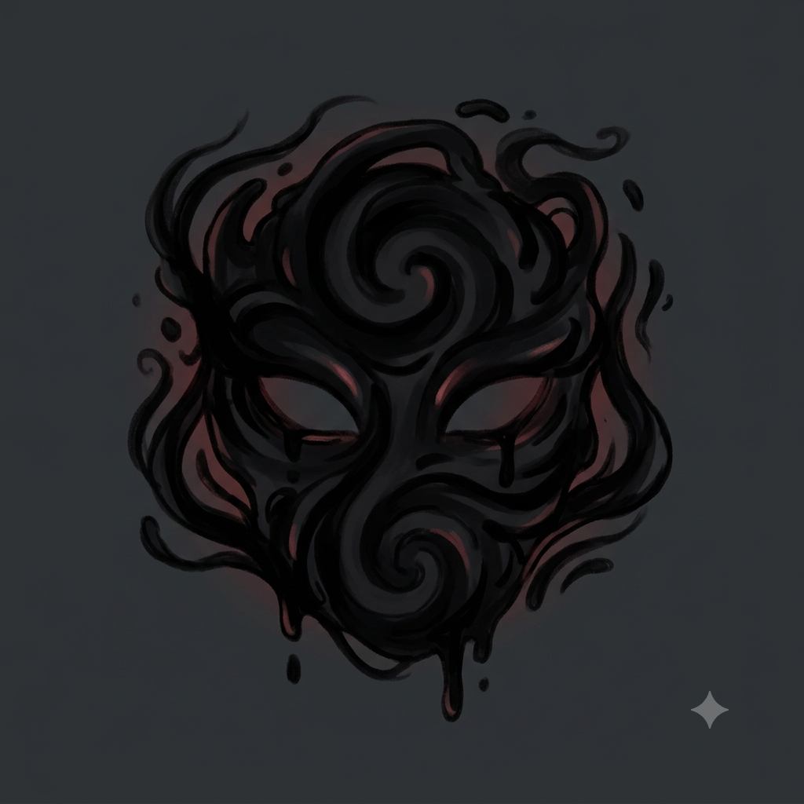
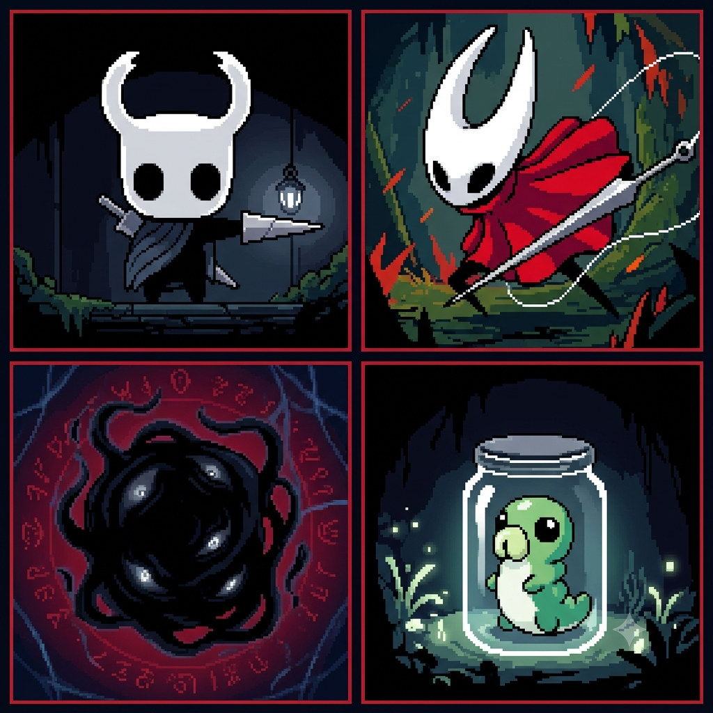
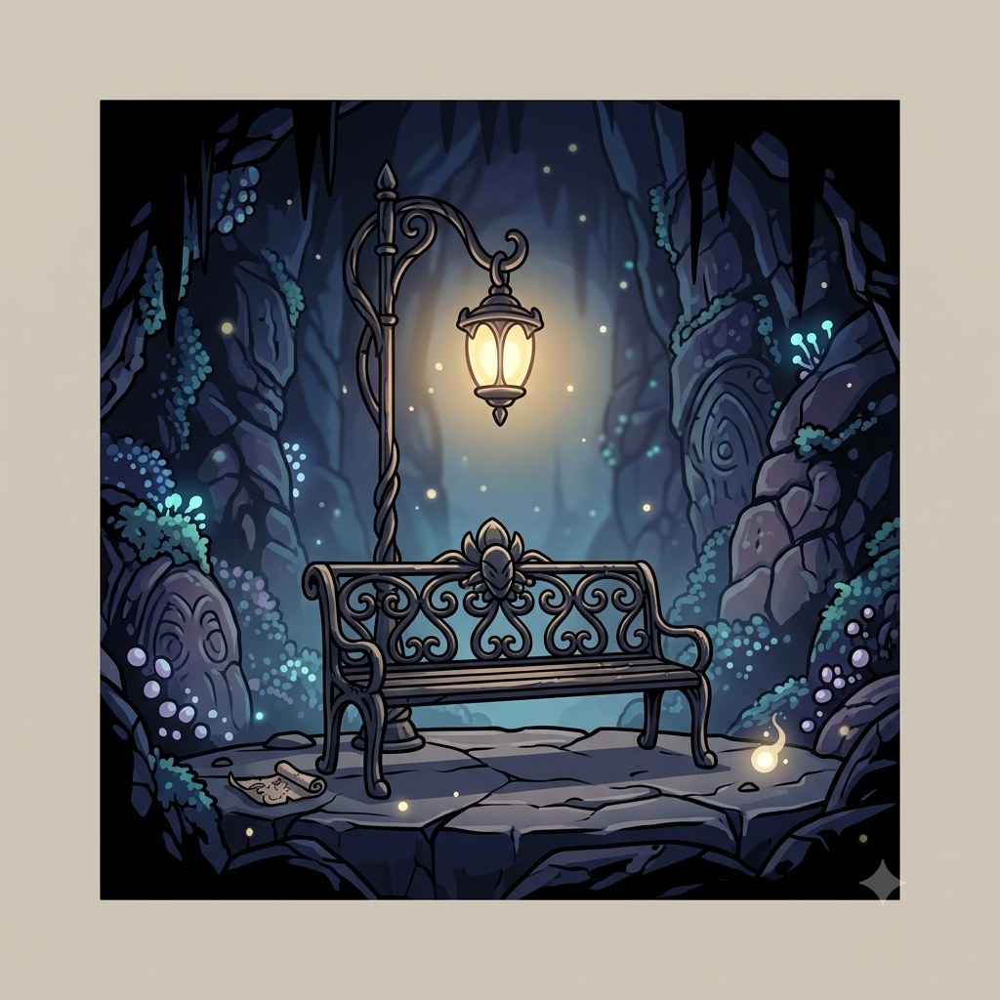
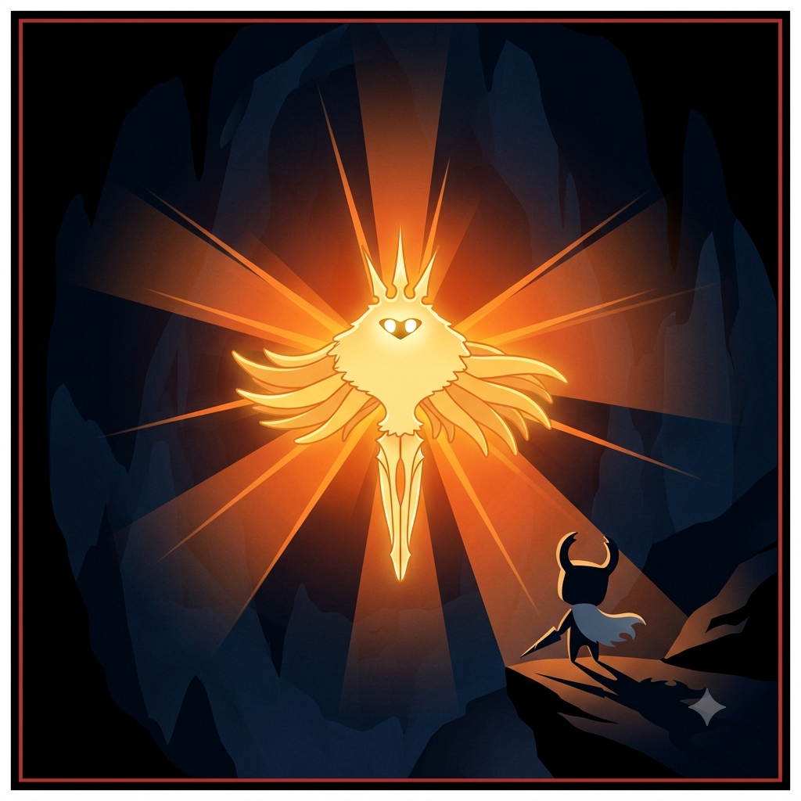

O Pequeno Cavaleiro
Por: Jhonny Poleza Araujo
Boas-vindas ao meu blog! Aqui vou compartilhar curiosidades e histórias sobre o incrível reino em ruínas de Hallownest e seus habitantes.
Explorando os mistérios, segredos e a lore de Hollow Knight

Por: Jhonny Poleza Araujo
Boas-vindas ao meu blog! Aqui vou compartilhar curiosidades e histórias sobre o incrível reino em ruínas de Hallownest e seus habitantes.

Por: Jhonny Poleza Araujo
Hornet é uma das personagens mais marcantes do jogo. Habilidosa com sua agulha e fio, ela testa a determinação do Cavaleiro ao longo de sua jornada.
Fonte: Hollow Knight Wiki

Por: Jhonny Poleza Araujo
Abaixo das profundezas do reino jaz o Vazio, uma substância negra e misteriosa que deu origem aos Vasos criados pelo Rei Pálido.
Fonte: Lore de Hallownest

Por: Jhonny Poleza Araujo
Uma das missões mais marcantes do jogo é resgatar as pequenas larvas (Grubs) presas em potes espalhados por todo o mapa.
Fonte: Guia do Jogador

Por: Jhonny Poleza Araujo
Em um mundo tão perigoso e hostil, o som suave da música de um banco para descansar e salvar o progresso traz uma sensação inigualável de paz.
Fonte: Opinião do Autor

Por: Jhonny Poleza Araujo
A praga alaranjada que domina a mente dos insetos tem sua origem na antiga deusa Radiance, que busca não ser esquecida pelos habitantes do reino.
Fonte: Compêndio de Hallownest